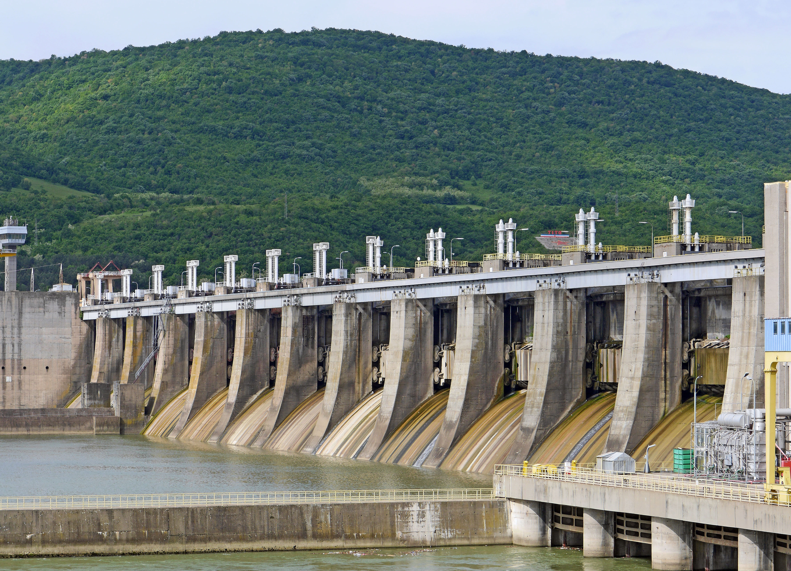
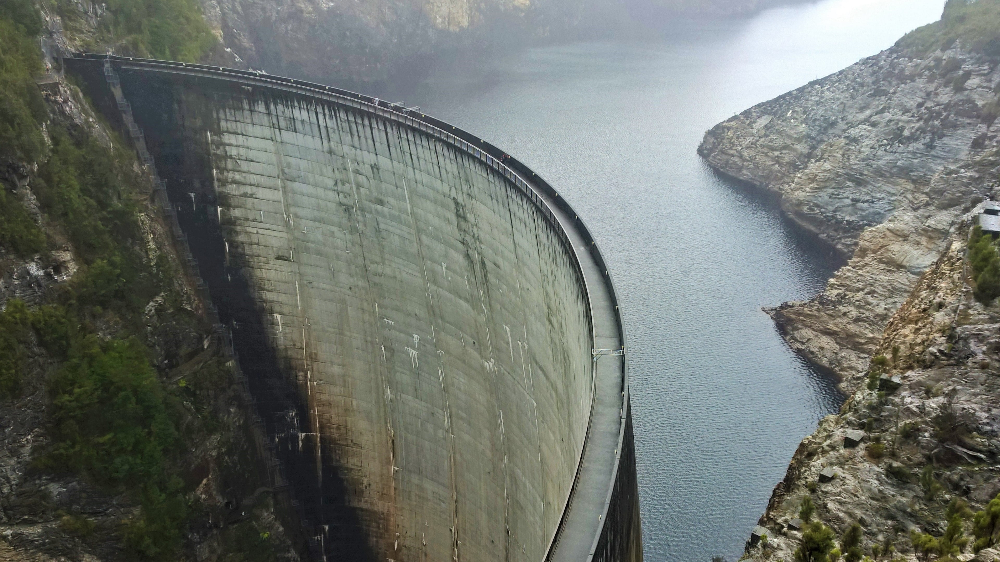

Introduction to Hydro Energy
Wind energy harnesses the kinetic energy of moving air by using large wind turbines located on land or in sea or freshwater.
Wind energy has been used for millennia, but onshore and offshore wind energy technologies have evolved over the last few years to maximize the electricity produced - with taller turbines and larger rotor diameters.
Many parts of the world have strong wind speeds, but the best locations for generating wind power are sometimes remote ones. Offshore wind power offers tremendous potential.

Impacts of hydro energy
The hydropower projects have several impacts on the environment. Water quality decline is one of the impacts of hydropower and water quality may be affected around a hydropower plant.Water discharged from a reservoir can be of a different composition to the water that is flowing into a reservoir. The other impacts of hydropower plant are migrations barriers. Hydropower dams impede the flows of rivers and thereby affect the habitat of various aquatic lives. Migratory animals require different environments for their different phases of their life cycle. Different stages are reproduction, production of juveniles, growth and sexual maturation.
These different stages take place in different environments for different fishes. Even if hydropower is a renewable energy source it is not an energy source without GHG emissions. Greenhouse gas emissions can occur at three different phases hydropower plant (the construction, the operation and maintenance and the decommissioning of the plant). Durig the construction phase the emissions comes from the production and transport of the materials needed for the construction and from the work equipment.
In the second phase, the operation and maintenance, the emissions can come from e.g. heating or cooling systems and transportation for maintenance work [5]. Hydropower project also leads to sedimentation. The natural carried sediment from the usual natural flow will be negatively affected. Bergengren states in their report that when constructing a dam or hydropower plant, changes in the hydrological regime will follow. IPCC suggest the same thing and claim in their report that changes in the hydrological regime is a significant impact from the hydropower plant.
